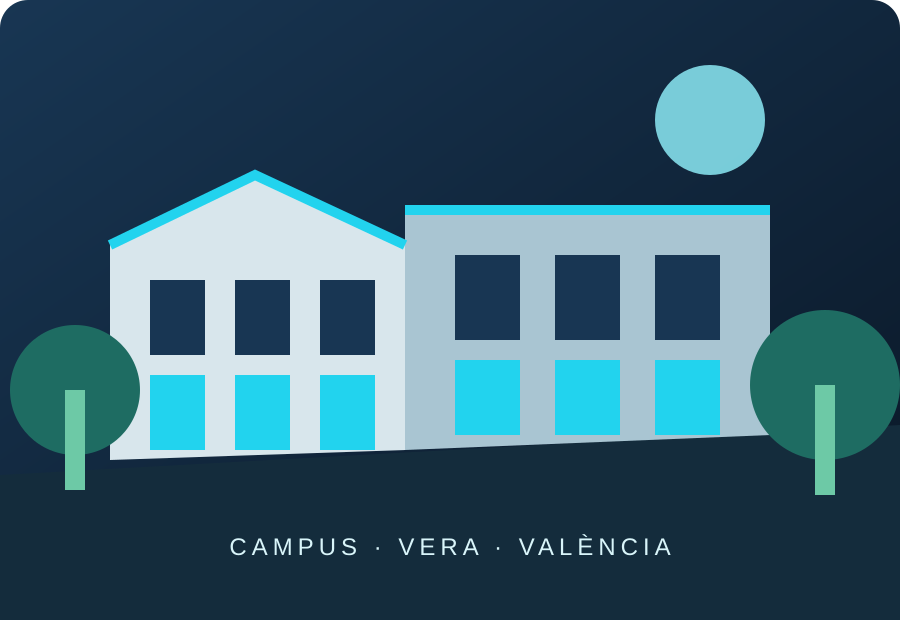

Movilidad
La ficha del grado informa de más de 100 vacantes en universidades de distintos países.
03 — UNIVERSIDAD Y CAMPUS
Mi opción de referencia es la Universitat Politècnica de València, en el campus de Vera, donde se imparte el grado en València.

EL CENTRO
La Escuela Técnica Superior de Ingeniería Aeroespacial y Diseño Industrial (ETSIADI) está vinculada a esta titulación en el campus de València. La información oficial del grado permite consultar los datos académicos y los servicios universitarios.
46022 · València
Universidad pública de carácter tecnológico.
Ingeniería Aeroespacial y Diseño Industrial.
CÓMO LLEGAR
La localización exacta, las opciones de transporte y el plano actualizado deben comprobarse en los canales oficiales de la universidad.
Cómo llegar a la UPV ↗OPORTUNIDADES
La ficha del grado informa de más de 100 vacantes en universidades de distintos países.
La UPV indica que se pueden reconocer hasta 18 créditos por prácticas profesionales.
El grado permite continuar con estudios de máster relacionados con diseño e ingeniería.
MI OPINIÓN
Valoro del campus de la UPV de Vera que sea un espacio amplio, moderno y con muchas oportunidades para aprender y desarrollar mi creatividad. Me gustaría conocer sus aulas, talleres de diseño, laboratorios, bibliotecas y zonas comunes. Me imagino estudiando allí, realizando proyectos prácticos, aprendiendo cosas nuevas y trabajando en equipo con otros estudiantes. Creo que sería una experiencia muy interesante que me ayudaría a prepararme para mi futuro profesional. También me gustaría comprobar qué grados relacionados con el diseño de productos ofrece, cuáles son los requisitos de acceso y qué salidas profesionales tienen.